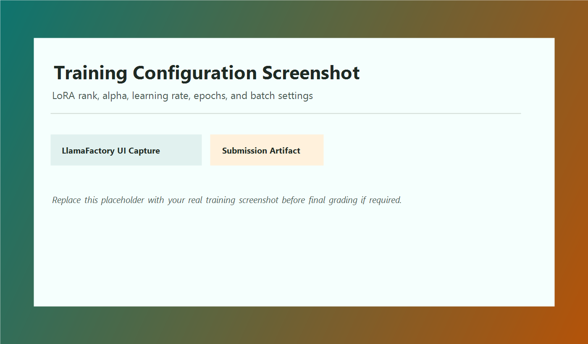
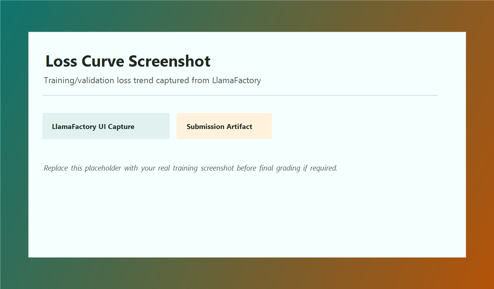

Structured Output Fine-Tuning:
Llama 3.2 for Reliable JSON Extraction
This project fine-tunes Llama-3.2-3B-Instruct with LoRA to convert unstructured invoices and purchase orders into machine-parseable JSON for production automation workflows.
Model: Llama 3.2 3B Method: LoRA SFT Framework: LlamaFactorySchema
- schema/invoice_schema.md
- schema/po_schema.md
Data
- data/curated_train.jsonl
- data/curation_log.md
Evaluation
- eval/baseline_scores.csv
- eval/finetuned_scores.csv
- eval/before_vs_after.md
- eval/failures/failure_01-05.md
Methodology
- training_config.md
- prompts/prompt_iterations.md
- prompts/prompt_eval.md
- report.md
Screenshots
Training artifacts used in submission documentation.

